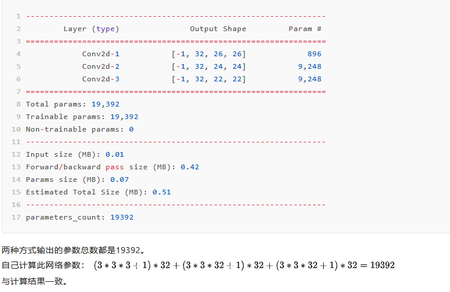
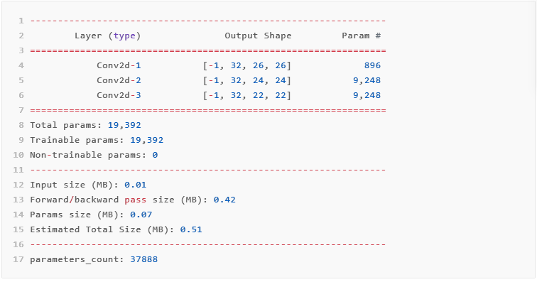

类中的方法和属性
方法：也就是各类中定义的函数，比如我们定义一个车的类，描述车的函数就是一个方法。
属性：车的品牌、型号、生产日期等信息就是它的属性.
__init__方法：
无需直接调用，生成实例对象的时候自动调用。
“init”的全称是“initialize”，也就是初始化的意思，所以__init__又称构造方法。
在定义类的时候init()方法是必不可少的。
(1)双下划线开头的函数为私有函数，不能在类的外部被调用或直接访问；
(2)init()，支持带参数的初始化，例如：def init(self,ai_settings,screen)；
(3)init()函数的第一个参数必须为self（也可是别的名字），后续参数可自由指定；
init()这种初始化方法，用来初始化新创建对象的属性，在一个对象被创建以后会立即调用，比如像实例化一个类：
1 | class Car(): |
程序中没有直接调用__init__方法，但make，model，year等属性通过Car()类自动调用了__init__方法，生成了属性。
self参数
“self”的英文意思很明显，是自己的意思。即实际指的是，类实例对象本身。
同时，由于说到“自己”这个词，都是和相对而言的“其他”而说的；而此处的其他，指的是，类Class，和其他变量，比如局部变量，全局变量等。
此处的self，是个对象（Object），是当前类的实例。
因此，对应的self.valueName 和 self.function()中的valueName：表示self对象，即实例的变量。与其他的，Class的变量，全局的变量，局部的变量，是相对应的。
function：表示是调用的是self对象，即实例的函数。与其他的全局的函数，是相对应的。
因为Python已经规定：函数的第一个参数，就必须是实例对象本身，并且约定俗成，把其名字写为self。因此我们再定义类中的所有函数时必须传入self参数。
1 | class Car(): |
pytorch模型构建
模型总体结构
1 | import torch.nn as nn |
模型定义的具体方法
假设定义一个网络，输入为3通道大小为28*28的图片，经过以下网络输出10分类softmax分类结果：
卷积->卷积->ReLu激活->池化->卷积->卷积->ReLu激活->全连接->全连接->softmax
方法一：
1 | import torch.nn as nn |
1 | 打印模型： |
其中类似于ReLu激活函数的层在网络中有两种写法：
1 | import torch.nn as nn |
在如上网络中，MyNet1与MyNet2实现的结果是一致的，但是可以看到将ReLU层添加到网络有两种不同的实现，即nn.ReLU和F.ReLU两种实现方法。
其中nn.ReLU作为一个层结构，必须添加到nn.Module容器中才能使用，而F.ReLU则作为一个函数调用，看上去作为一个函数调用更方便更简洁。具体使用哪种方式，取决于编程风格。在PyTorch中,nn.X都有对应的函数版本F.X，但是并不是所有的F.X均可以用于forward或其它代码段中，因为当网络模型训练完毕时，在存储model时，在forward中的F.X函数中的参数是无法保存的。也就是说，在forward中，使用的F.X函数一般均没有状态参数，比如F.ReLU，F.avg_pool2d等，均没有参数，它们可以用在任何代码片段中。
方法二：
1 | import torch.nn as nn |
这种方法利用torch.nn.Sequential（）容器进行快速搭建，模型的各层被顺序添加到容器中。这种方法将多个层放在一起作为一个块运行，比较直观，缺点是每层的编号是默认的阿拉伯数字，不易区分。
1 | 打印模型： |
方法三：
1 | import torch.nn as nn |
这种方法是对第二种方法的改进：通过add_module()添加每一层，并且为每一层增加了一个单独的名字。
1 | 打印模型： |
方法四：
1 | import torch.nn as nn |
这个方法是第三种方法的另外一种写法，通过字典的形式添加每一层，并且设置单独的层名称。
OrderedDict是python的有序字典，使用OrderedDict会根据放入元素的先后顺序进行排序，所以输出的值是排好序的。 OrderedDict对象的字典对象如果其顺序不同，那么Python也会把他们当做是两个不同的对象。
1 | 打印模型： |
模型的参数共享
假设只有3层卷积的模型有以下两种写法：
1 | import torch.nn as nn |
以输入为28*28的3通道图片作为输入，打印模型的参数。pytorch中模型的参数统计输出方法有以下两种:
1 | from torchsummary import summary |
MyNet6的参数打印两种结果:

MyNet7的参数打印两种结果：
此时会发现summary方法输出的参数符合计算，但parameters_count方法输出的参数量少了。
为什么会出现这种问题？要想找到原因肯定是要先了解网络是怎么构建的，从网络构建可以看出，这个网络只初始化了两个卷积层对象——conv1和conv2，然后在网络构建时（forward里面），重复调用了conv2，这样做是因为：根据pytorch官方的教程，这样可以实现参数共享，也就是Conv2d-2 和Conv2d-3 层共享了conv2的参数。也就是其实这里只用了一个卷积层的参数，所以parameters_count 计算的是对的，但是torchsummary为什么计算成了19392？ 那是因为torchsummary 计算时是先把层结构打印下来，然后再统计对各个层的参数求和，这样一来，它不会区分conv2d-2和conv2d-3里面的参数是否相同，只是根据结构都打印且统计了出来。所以在遇到参数共享的时候，torchsummary统计的是不正确的。
那parameters_count计算出来的结果一定对吗？看下面模型：
1 | class MyNet8(nn.Module): |
这里初始化了一个conv4的层，但是在forward函数里没有使用，也就是MyNet8跟MyNet6的结构是等价的，理论参数应该同样为19392。
MyNet8的参数打印两种结果：

可以发现这个时候，parameters_count方法出现了错误。因为在MyNet8里多初始化了conv4,即使没有在forward里面调用，但是它也算在的model.parameters()里面。
因此，如果没有共享参数的情况出现尽量用torchsummary来计算，如果出现了共享参数的情况，那就用parameters_count的计算方式，这个时候要注意尽量将没有用到的层对象注释干净，这样才能计算出正确的参数来。
ModuleList和Sequencial
nn.ModuleList
ModuleList功能类似于python中的列表（list），可以把nn.Conv2d，nn.Linear等加入到里面去，但与列表不同的是，加入到nn.ModuleList中的模块会注册到网络中，并且里面的层参数也会添加到网络中。举例如下：
1 | class net1(nn.Module): |
这是一个包含两个全连接层的简单网络，打印网络结构和参数可以看到每层的权值(weights)和偏置(bias)都在网络之内。接下来使用列表：
1 | class net2(nn.Module): |
使用 Python 的 list 添加的全连接层和它们的 parameters 并没有自动注册到网络中。虽然还是可以使用 forward 来计算输出结果，但是如果用 net2 实例化的网络进行训练的时候，因为这些层的 parameters 不在整个网络之中，所以其网络参数也不会被更新，也就是无法训练。
除此之外，ModuleList中添加的层没有先后顺序，最终顺序是按照forward函数里面的执行顺序决定，如下：
1 | class net3(nn.Module): |
在ModuleList中，同一个元素（Module、层）也是不能重复使用的，重复使用也会参数共享。
nn.Sequencial
第二节模型构建的方法中除了第一种是一层层写，其他三种都是利用Sequencial方法。Sequencial方法和keras中的序贯模型很像，与ModuleList不同的是，在模型最终执行时，Sequencial里面的模块（层）会按照顺序执行。并且由于Sequential本身已经实现了forward函数，因此在定义模型的时候，可以不需要forward函数，举例如下：
1 | class net5(nn.Module): |
上面的方法是按照模型构建方法进行实现，不使用forward可以这么写：
1 | model1 = nn.Sequential( |
这种方法省去了定义模型类的过程，这种写法构建的模型与上面net5是等价的。在不需要添加一些其他处理函数（比如全连接层之前的flatten操作：x = x.view(x.size(0), -1)）的情况下可以这么写。
一般来说，nn.Sequential 的用法是来组成卷积块 (block)，然后像拼积木一样把不同的 block 拼成整个网络，让代码更简洁直观，更加结构化。
nn.ModuleList和nn.Sequential使用情景
场景一，有的时候网络中有很多相似或者重复的层，一般会考虑用 for 循环来创建它们，而不是一行一行地写，比如：
1 | layers = [nn.Linear(10, 10) for i in range(3)] |
这个时候会想到用ModuleList：
1 | class net6(nn.Module): |
这种也可以使用Sequential：
1 | class net7(nn.Module): |
需要注意的是第5行的*操作符。它的作用是把一个 list 拆开成一个个独立的元素。但是这个 list 里面的模块必须是按照想要的顺序来进行排列。
场景二，当需要之前层的信息的时候，比如 ResNets 中的 shortcut 结构，或者是像 FCN 中用到的 skip architecture 之类的，当前层的结果需要和之前层中的结果进行融合，一般使用 ModuleList 比较方便，举例如下：
1 | class net8(nn.Module): |
这里使用了一个列表trace来储存网络每层的输出结果，这样如果以后的层要用的话，就可以很方便地调用了。
- Post link: https://lingo1101.github.io/2020/10/24/learn/Deeplearn/pytorch/
- Copyright Notice: All articles in this blog are licensed under unless stating additionally.
若没有本文 Issue，您可以使用 Comment 模版新建。
GitHub Issues